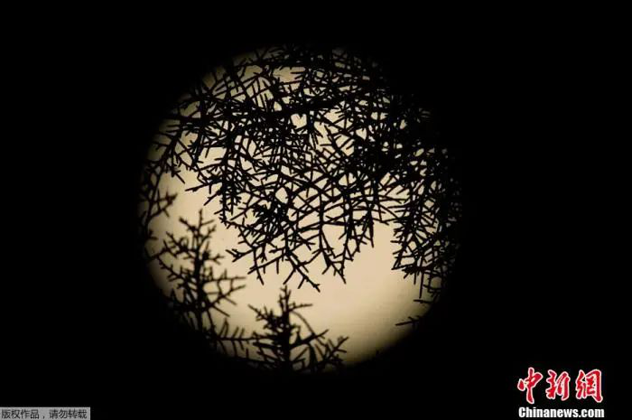

10月初，“双节”之夜的皎皎明月，想必给不少人留下了美好回忆。而在月末之时，另一轮圆月又将升上夜空。这次，它还有个浪漫的名字——“蓝月亮”。
名字由来其实与颜色无关
“蓝月亮，你看我独自徜徉，心中没有梦想，也没有爱人在身旁；蓝月亮，你知道我就在那里，你可听见我为心中在乎的人，浅吟低唱。”这段歌词源自美国经典流行歌曲《蓝月亮》。
提起“蓝月亮”，人们想到的场景可能和这首歌一样，浪漫中带有一丝忧伤。

但事实上，这个诗情画意的名字，与月亮的颜色并没有关系，指的只是天文历法中的一种特殊现象。 如果1个公历月中出现两次满月，第二次满月就被称作“蓝月亮”。
通常两个满月间的时间间隔为29.53天，比每月的平均天数略短，因此大约每2.1754年中会累积出一次额外的满月，上一次 “蓝月亮”出现是在2018年3月。 “蓝月亮”指代同一个公历月中第二次满月，这个用法起源于一次误会。 1946年，天文学家詹姆斯·休·普鲁特在《天空和望远镜》杂志上，发表的一篇文章“Once in a Blue Moon”中，误解了美国缅因州农民的历书，把一个月中的第二个满月称为“蓝月亮”。 而实际上，该历书中“蓝月亮”指的是，一个季度中出现的4次满月中的第3个。 1980年，美国一档广受欢迎的广播节目引用了普鲁特的定义，这个说法就流传开来。“Once in a Blue Moon”在英语中，有着“非常罕见、千载难逢”的意思。
有些自然灾害，真的会让月亮“变蓝”
有民间传说称，“蓝月亮”预示着灾难，该说法并没有科学依据。但每当火山爆发或发生森林大火时，这些自然灾害，却真的可能会让月亮变成蓝色。
1883年，印尼喀拉喀托火山爆发。科学家称其威力相当于1亿吨核弹爆炸。 声响传到足足600公里外，引发的火山海啸造成超3.6万人死亡。 火山灰云中充满了直径约1微米的粒子。红、黄光等波长较长的光绕不过去，会被反射或吸收，而蓝、紫光等波长较短的光，虽绕不过1微米的微粒，但可以从颗粒间的孔隙穿过，这就形成了蓝色月亮，并一度持续了数年时间。 其他威力较小的火山喷发也“染蓝”过月亮。
1980年美国圣海伦斯火山、1991年菲律宾皮纳图博火山爆发后，人们都看到了蓝色的月亮。 类似于火山爆发，森林大火也会改变月亮的颜色。
1950年9月，加拿大阿尔伯塔省发生森林大火，烟雾散去后，太阳呈现出淡紫色或蓝色。大洋另一端的苏格兰爱丁堡天文台，观测到月亮折射出“蓝光”。 天文学家认为，这是因为当时月亮折射的光线经过一片夹杂了加拿大森林火灾造成的灰尘和粒子，才导致月光变蓝。
70年后的2020年，美国西部山火燃烧面积屡创纪录，目前火势依旧在蔓延。该地区的观测者，可能真的会看到青蓝色或红蓝色的月亮。
“蓝月亮”名不副实，“粉月亮”也平平无奇？
从天体物理学观点分析，月亮的颜色是反射太阳光形成的，一般来讲，月亮都是珍珠白色。 事实上，不仅“蓝月亮”不是蓝色，还有一些有关月亮的美丽称呼，都逃不开“徒有虚名”。 4月份的满月，有一个充满春天气息的名字——“粉月亮”，不过它并没有玫瑰色的风采。 之所以叫“粉月亮”，是因为当时正是春天粉红色花朵盛开的时候。 6月的满月得名“草莓月亮”，也不是因为月亮看起来像红彤彤的草莓。这个名字源于美国原住民认为采摘草莓的最佳时机到了。 自古以来，神秘的月亮就一直让人为之倾倒，各种充满浪漫色彩的名字也寄托了人们对其浓厚的兴趣。
来自: 中国科学报